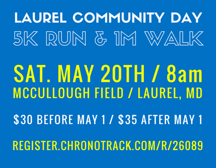

This year, LARS is proud to be partnering with First Generation College Bound for a 5K to kick off Laurel High School’s Community Day!
Followed by festivities at Laurel High School, including food trucks, a car show, moonbounces, and more!
Save the Date: Saturday, May 20, 2017 (Laurel, MD) @8am
This year, LARS is proud to be partnering with First Generation College Bound for a 5K to kick off Laurel High School’s Community Day! The 5K run and 1 mile walk will take place at McCullough Field, starting at 8AM and following the same route as LARS’ past 5Ks.
We are excited to be sharing this fun day with FGCB, a great local organization making college access and success a reality for low-income students in Laurel.
All proceeds from this joint fundraiser will be split between LARS and FGCB to help advance our shared vision for the Laurel community. After the 5K, the fun continues just up the road at Laurel High School, including a car show, food trucks, a moon bounce, and more from 11-3PM.
To register for this awesome event, you can visit the online registration.
To view the event flyer you can check it out here.